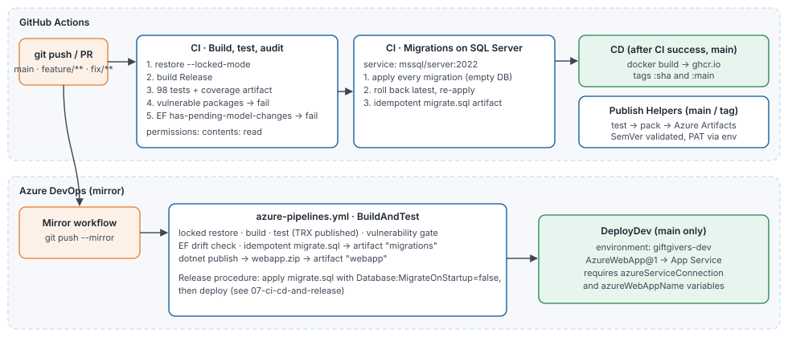

CI/CD and Release
Pipelines, quality gates, secrets, environments, the release procedure, migrations, rollback, backup and recovery.
1. Pipeline overview

| Pipeline | File | Trigger | Gates / outputs |
|---|---|---|---|
| CI — Build, test, audit | .github/workflows/ci.yml | Push to main, feature/**, fix/**; PR to main | Locked restore → Release build → 98 tests + coverage (artifact) → fail on vulnerable packages → fail on EF model drift |
| CI — Migrations on SQL Server | same file, job migrations | Same | SQL Server 2022 service container → apply all migrations to an empty DB → roll back the latest and re-apply → migrate.sql (idempotent) artifact |
| CD | .github/workflows/cd.yml | workflow_run: CI completed successfully on main (push) | Container image to GHCR :sha and :main, OCI labels |
| Mirror | .github/workflows/mirror-to-azure-devops.yml | Any push | git push --mirror to Azure DevOps |
| Publish Helpers | .github/workflows/publish-helpers-package.yml | main, tags helpers-v*, manual | SemVer check → explicit AZURE_ARTIFACTS_PAT preflight and feed authentication → helper tests → pack → push to Azure Artifacts |
| Azure Pipelines | azure-pipelines.yml | Mirrored main, feature/*; PR to main | Locked restore, build, test (TRX), vuln gate, drift check, migrations artifact, webapp zip → DeployDev on main |
All GitHub workflows declare least-privilege permissions. CD is the only one with packages: write.
Status. These pipeline definitions were changed during remediation and have not yet run on GitHub or Azure DevOps. Their steps were executed locally where possible (restore, build, tests, vulnerability list, drift check, migrations on LocalDB, idempotent script). Record the first green runs in the next audit.
2. Secrets and variables
| Name | Where | Used by | Notes |
|---|---|---|---|
GITHUB_TOKEN | GitHub (automatic) | CD | packages: write only in CD |
AZURE_DEVOPS_REPO_URL, AZURE_DEVOPS_PAT | GitHub secrets | Mirror | PAT scope: Code read and write |
AZURE_ARTIFACTS_PAT | GitHub secret | Publish Helpers | Required; the workflow fails early with a setup hint if missing. PAT scope: Packaging read and write; passed via env |
azureServiceConnection, azureWebAppName | Azure DevOps variables | DeployDev | Deploy is skipped if empty |
App settings (connection string, PayFast__*, SendGrid__ApiKey, Organisation__*, StaffAccess__BootstrapEmployeeEmails__0) | App Service configuration / Key Vault | Runtime | Never in the repository |
The CI migrations job uses a throwaway SQL Server password that exists only inside the job's container. It is not a secret.
3. Branching and protection
- Branches:
feature/<name>,fix/<name>; PRs intomainusing the PR template. - Required on
main: one approval; status checksBuild, test, auditandApply migrations to SQL Server; no direct pushes; linear history recommended. - Tag releases as
vYYYY.MM.N(web app) andhelpers-vX.Y.Z(package).
4. Environments
| Environment | Hosting | Database | Deploy source | Config highlights |
|---|---|---|---|---|
| Local | dotnet run / Docker Compose | LocalDB / container | Developer | Development, demo data, sandbox |
| CI | GitHub runner | SQL Server 2022 service | — | Throwaway |
Dev (giftgivers-dev) | Azure App Service (Free F1 today) | Azure SQL | Azure Pipelines DeployDev | Production environment name, sandbox payments, IsDemo=true |
| Production (planned) | App Service Standard with slots | Azure SQL (PITR) | Same artifact, after approval | Live PayFast (passphrase required), IsDemo=false, MigrateOnStartup=false, ForwardedHeaders:Enabled=true on Linux |
5. Release procedure
- Prepare. Merge to
mainwith CI green. Note the commit SHA and the finding IDs closed. - Database. Download the
migrations/migrate.sqlartifact from the run. Review it for destructive statements. Take an on-demand backup (or note the PITR timestamp). Apply the script to the target database: it is idempotent, so applying it twice is safe. - Deploy the
webappartifact (Azure PipelinesDeployDev, or the GHCR image) withDatabase:MigrateOnStartup=false. - Verify (smoke checklist):
GET /healthreturnsHealthy(database reachable) and/health/livereturns 200.- Home, Projects, Donate and Privacy return 200; response headers include CSP and
X-Frame-Options: DENY. - Make a sandbox donation (or a live R 5 test in production), confirm PayFast returns to the receipt, and that the donation shows Paid after the ITN.
- The Employee dashboard shows no unexpected projects needing review; the audit log shows the
PaymentVerifiedentry.
- Record the release (tag, date, SHA, migration ids, verification result) in the release notes.
Release notes template
Release vYYYY.MM.N — <date> — <sha>
Changes: <summary>; closes F-nn, F-nn
Database: migrations <ids> (backfill: yes/no; destructive: yes/no)
Config changes: <keys>
Verification: health ✔, smoke ✔, sandbox/live payment ✔ (<reference>)
Rollback point: <PITR timestamp / previous artifact>6. Rollback
| Situation | Action |
|---|---|
| App defect, schema unchanged | Redeploy the previous artifact (or swap slots once T-3.2 exists) |
| App defect after an additive migration | Redeploy the previous artifact. Additive columns are ignored by older code |
| Migration defect | dotnet ef database update <previous migration> generates the Down() script. The remediation migration's Down has been tested (LocalDB). For data loss, restore to a new database from PITR and switch the connection string |
| Payment issue | Set PayFast:Enabled=false (donations are recorded as Pending and nothing is charged), investigate, re-enable |
Backward compatibility: migrations must be additive in the release that introduces them. Drop columns one release later, after no running code uses them.
7. Backup and disaster recovery
| Item | Target (proposed) | Current state |
|---|---|---|
| Database backups | Azure SQL automated backups with point-in-time restore, retention ≥ 14 days | Depends on the Azure SQL tier — not verified |
| RPO | ≤ 24 h (PITR gives minutes) | Not measured |
| RTO | ≤ 4 h | Not measured |
| Restore drill | Quarterly, restore to a copy and run the smoke checklist | Never performed (finding F-17, task T-1.4) |
| Configuration backup | App settings exported to Key Vault / IaC | Manual (T-3.1) |
| Data Protection keys | In the database (backed up with it) | Done |
Restore steps (Azure SQL): Portal → SQL database → Restore → point in time → new database name → update the App Service connection string → restart → smoke checklist → record the timings.
8. Monitoring and incident response
| Signal | Source | Current | Planned |
|---|---|---|---|
| Liveness / readiness | /health/live, /health (DB check) | Available | App Service health check + alert (T-1.5) |
| Request logs | Serilog request logging (console) | Available | Application Insights |
| Payment problems | Log warnings/errors for rejected ITNs, amount or merchant mismatch | Logged | Alert on any rejection |
| Data integrity | Dashboard card "projects whose funding total needs review" | Available | Weekly review |
| Security events | Audit log (staff grants and revokes, exports) | Available | Alert on EmployeeGranted |
Incident checklist:
- Assess impact (payments? personal data?).
- Contain (disable payments, revoke staff access, rotate secrets).
- Preserve logs and audit entries.
- Fix.
- Reconcile funding.
- Notify (POPIA requires notifying the Information Regulator and affected people after a personal-data compromise).
- Add a finding to the register.